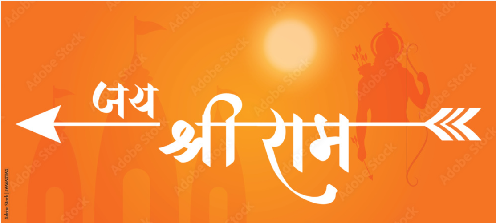

- Home
- Art & Crafts
- Culture
-

Uttar Predesh
Uttar Pradesh, often abbreviated as UP, is a diverse and populous state located in northern India. It is known for its rich history, cultural heritage, and religious significance. With cities like Agra, Varanasi, and Lucknow, Uttar Pradesh attracts tourists from around the world.
The state is home to iconic landmarks such as the Taj Mahal, one of the Seven Wonders of the World, situated in Agra. Another famous destination is Varanasi, the spiritual capital of India, where pilgrims flock to the banks of the Ganges River to perform rituals and seek spiritual enlightenment.
Uttar Pradesh boasts a vibrant culture, reflected in its festivals, music, dance, and cuisine. The state celebrates festivals like Diwali, Holi, Eid, and Navratri with great enthusiasm, bringing communities together in joyous celebrations.
The cuisine of Uttar Pradesh is a delicious blend of flavors, with dishes like kebabs, biryanis, chaat, and sweets like peda and petha being popular among locals and visitors alike.
Uttar Pradesh has a rich literary tradition, with famous poets like Kabir, Tulsidas, and Mir Taqi Mir hailing from the region. The state has also been a center of learning and education, with institutions like the Banaras Hindu University and the Aligarh Muslim University being renowned for their academic excellence.
Despite its cultural richness, Uttar Pradesh faces challenges such as poverty, unemployment, and social inequality. However, efforts are underway to address these issues and promote economic development and social welfare across the state.
Overall, Uttar Pradesh is a land of contrasts, where ancient traditions coexist with modernity, and cultural diversity thrives. Its historical significance, religious heritage, and vibrant culture make it a fascinating destination for travelers seeking to explore the essence of India. -
Art & Crafts

Introduction: Uttar Pradesh, the heartland of India, is not only known for its rich history and religious significance but also for its vibrant tradition of art and craft. From intricate embroidery to exquisite pottery, the state's artistic legacy is a testament to its cultural diversity and craftsmanship. Let's delve into the artistic treasures of Uttar Pradesh and discover the richness of its traditional crafts.
1. Chikankari Embroidery: The Elegance of White-on-White Chikankari embroidery is one of the most renowned traditional crafts of Uttar Pradesh, characterized by delicate white-on-white embroidery on fine muslin fabric. Originating from the city of Lucknow, Chikankari is known for its intricate thread work, including stitches like 'jaali' (net), 'murri' (fish-scale), and 'phanda' (knot). This exquisite craft has been passed down through generations of artisans, with each piece reflecting the timeless beauty and elegance of Chikankari embroidery.
2. Zardozi Work: A Celebration of Opulence and Grandeur Zardozi work, which translates to "gold embroidery," is a traditional craft that originated in Uttar Pradesh during the Mughal era. Artisans meticulously sew metallic threads, sequins, and beads onto fabrics like silk and velvet to create intricate designs and patterns. Zardozi work is often used to embellish bridal wear, ceremonial attire, and home decor items, adding a touch of opulence and grandeur to every creation.
3. Banarasi Silk Weaving: A Legacy of Luxury and Tradition Banarasi silk weaving is synonymous with luxury and elegance, with Varanasi being the epicenter of this traditional craft. Artisans use handloom techniques to weave fine silk fabric, adorned with intricate brocade patterns and motifs inspired by Mughal art and architecture. Banarasi sarees are prized for their rich textures, vibrant colors, and timeless appeal, making them a cherished heirloom passed down through generations.
4. Terracotta Pottery: Earthy Beauty in Every Form Terracotta pottery is an ancient craft practiced in Uttar Pradesh, with artisans shaping clay into a variety of utilitarian and decorative objects. From pots and vases to figurines and sculptures, terracotta pottery reflects the region's rural heritage and connection to the earth. Artisans use traditional techniques like hand-coiling and wheel-throwing to create unique pieces, often embellished with intricate designs and motifs inspired by nature and mythology.
5. Wood Carving: Capturing Stories in Every Stroke Wood carving is a traditional craft that flourishes in Uttar Pradesh, with artisans carving intricate designs and motifs on various wooden objects. From furniture and doors to decorative panels and sculptures, wood carving showcases the skill and craftsmanship of Uttar Pradesh's artisans. Each piece tells a story, with motifs ranging from floral patterns to religious symbols, reflecting the cultural heritage and artistic sensibilities of the region.
6. Glass Beadwork: Sparkling Creations that Dazzle the Eye Glass beadwork is a traditional craft that adds sparkle and color to Uttar Pradesh's artistic landscape. Artisans handcraft intricate jewelry, accessories, and decorative items using colorful glass beads, sequins, and mirrors. Glass beadwork is often associated with festivals, weddings, and ceremonial occasions, where these sparkling creations add a touch of glamour and festivity to traditional attire.
Conclusion: The traditional crafts of Uttar Pradesh are a testament to the region's rich cultural heritage, skilled craftsmanship, and artistic ingenuity. From Chikankari embroidery and Zardozi work to Banarasi silk weaving, terracotta pottery, wood carving, and glass beadwork, each craft form embodies the unique identity and cultural legacy of Uttar Pradesh. As custodians of these age-old traditions, Uttar Pradesh's artisans continue to preserve and promote their craft, ensuring that the artistic heritage of the region remains vibrant and timeless for generations to come. -
Culture
Religion, Feasts and Festival
Festivals: Celebrating Diversity with Joy and Fervor Uttar Pradesh is a land of festivals, where people from different communities come together to celebrate diversity and harmony. From the colorful Holi festivities in Mathura and Vrindavan to the grand Diwali celebrations in Ayodhya and Varanasi, each festival is marked by rituals, music, dance, and joyous gatherings. The Kumbh Mela, held every 12 years in Allahabad (now Prayagraj), is the largest religious gathering in the world, attracting millions of pilgrims and tourists to bathe in the sacred waters of the Ganges.
2. Cuisine: A Gastronomic Delight of Flavors and Aromas Uttar Pradesh's cuisine is a delightful fusion of flavors, influenced by Mughlai, Awadhi, and traditional Hindu culinary traditions. From succulent kebabs and aromatic biryanis to rich curries and mouth-watering sweets, the state's cuisine offers a gastronomic journey through centuries of culinary heritage. Famous dishes include Lucknow's renowned kebabs, Banarasi paan, Agra's petha, and Varanasi's mouth-watering chaat. Food is not just sustenance in Uttar Pradesh; it is an expression of love, hospitality, and cultural identity.
3. Music and Dance: Expressing Emotions Through Rhythm and Melody Music and dance are integral to Uttar Pradesh's cultural fabric, with each region boasting its unique musical traditions and dance forms. From the soul-stirring devotional music of the Banaras Gharana to the vibrant folk dances of the Braj region, Uttar Pradesh resonates with the sound of music and rhythm. Kathak, a classical dance form originating from Uttar Pradesh, is renowned for its intricate footwork, graceful movements, and expressive storytelling. Music and dance are not just entertainment; they are a means of connecting with the divine and expressing emotions that transcend language barriers.
4. Art and Craft: Preserving Heritage Through Creativity and Skill Uttar Pradesh is a treasure trove of artistic heritage, with traditional crafts flourishing in every corner of the state. Chikankari embroidery, originating from Lucknow, is famous for its intricate white-on-white threadwork on fine muslin fabric. Zardozi, the art of gold embroidery, adds opulence and grandeur to textiles and apparel. Banarasi silk weaving, terracotta pottery, wood carving, and glass beadwork are among the many traditional crafts that showcase the skill and creativity of Uttar Pradesh's artisans. These crafts not only preserve heritage but also provide livelihoods to countless families across the state.
5. Literature and Language: Nurturing the Soul Through Words and Expression Uttar Pradesh has a rich literary tradition, with Hindi and Urdu being the primary languages of expression. The region has been home to literary giants like Tulsidas, Kabir, Mir Taqi Mir, and Munshi Premchand, whose works continue to inspire and resonate with audiences worldwide. The poetic verses of Urdu ghazals, the philosophical teachings of Kabir's dohas, and the timeless epics of Ramayana and Mahabharata are part of Uttar Pradesh's literary legacy, nurturing the soul and igniting the imagination of generations.
Conclusion: Uttar Pradesh's cultural heritage is a tapestry woven with threads of tradition, spirituality, creativity, and diversity. From its vibrant festivals and gastronomic delights to its rich musical traditions, artistic craftsmanship, and literary legacy, Uttar Pradesh offers a kaleidoscope of experiences that captivate the senses and nourish the soul. As custodians of this cultural legacy, the people of Uttar Pradesh continue to celebrate, preserve, and pass on their heritage to future generations, ensuring that the spirit of Uttar Pradesh remains alive and thriving for centuries to come. -
Feasts and Festivals